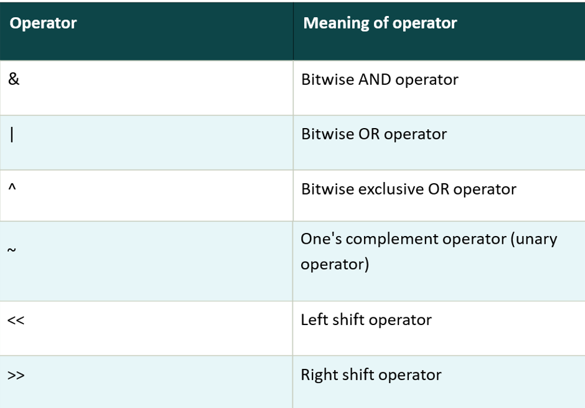

The bitwise operators are the operators used to perform operations on data at the bit-level.
When we perform the bitwise operations, it is also known as bit-level programming.
It consists of two digits, either 0 or 1.
It is mainly used in numerical computations to make the calculations faster.

Example
#include < stdio.h>
int main()
{
unsigned int a = 5, b = 9;
printf("a = %u, b = %u\n", a, b);
printf("a&b = %u\n", a & b);
printf("a|b = %u\n", a | b);
printf("a^b = %u\n", a ^ b);
printf("~a = %u\n", a = ~a);
printf("b<<1 = %u\n", b << 1);
printf("b>>1 = %u\n", b >> 1);
return 0;
}
Output
a = 5, b = 9
a & b = 1
a | b = 13
a ^ b = 12
~a = 4294967290
b << 1 = 18
b >> 1 = 4